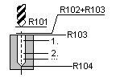
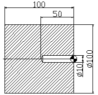
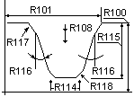
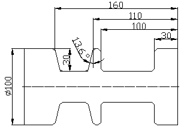
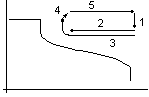
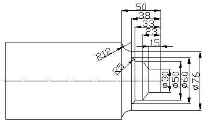
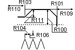
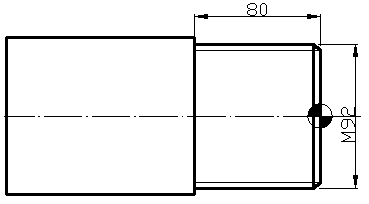

| 固定循环 |
循环是指用于特定加工过程的工艺子程序，比如用于钻削、坯料切削或螺纹切削等，只要改变参数就可以使这些循环应用于各种具体加工过程。
系统中装有车削和铣削所用到的几个标准循环。
标准循环概述
1. 循环概况
LCYC82 钻削，沉孔加工
LCYC83 深孔钻削
LCYC840 带补偿夹具的螺纹切削
LCYC84 不带补偿夹具的螺纹切削
LCYC85 镗孔
2.参数使用
循环中所使用的参数为R100～R149。
调用一个循环之前该循环中的传递参数必须已经赋值，不需要的参数置为零。
循环结束以后传递参数的值保持不变。
3. 计算参数
循环使用R250～R299作为内部计算参数，在调用循环时清零。
4. 调用/返回条件
编程循环时不考虑具体的坐标轴。在调用循环之前，必须在调用程序中回钻削位置。如果在钻削循环中没有设定进给率、主轴转速和方向的参数，则必须在零件程序开始设置这些值。循环结束以后G0 G90 G40一直有效。
5. 循环重新编译
当参数组在调用循环之前并且紧挨着循环调用语句时，才可以进行循环的重新编译。这些参数不可以被NC指令或者注释语句隔开。
6. 平面定义
钻削循环和铣削循环的前提条件就是首先选择平面G17、G18或G19，激活设置的坐标转换(零点偏置，旋转)从而定义目前加工的实际坐标系。钻削轴始终为系统的第三坐标轴。
在调用循环之前，平面中必须已经有一个具有补偿值的刀具生效，在循环结束之后该刀具保持有效。
| LCYC82 钻削/沉孔加工 |
1. 功能
刀具以设置的主轴转速和进给率钻孔，直至到达最终钻削深度。在到达最终深度时可以设置一个停留时间。退刀时以快速移动速度进行。
2. 调用
LCYC82
3. 前提条件
在调用程序中规定主轴转速和方向以及钻削轴进给率。
在调用循环之前必须在调用程序中回钻孔位置。
在调用循环之前必须选择带补偿值的相应的刀具。
4. 参数说明
| 参数 | 含义，数值范围 |
R101 |
返回平面(绝对坐标) |
R102 |
安全高度 |
R103 |
参考平面(绝对坐标) |
R104 |
最后钻深(绝对坐标) |
R105 |
在最后钻削深度停留时间 |
说明：
R101 返回平面确定循环结束之后钻削轴的位置，用来移动到下一位置继续转孔。
R102 安全距离只对参考平面而言，循环可以自动确定安全距离的方向。
R103 参数R103所确定的参考平面就是图纸中所标明的钻削起始点。
R104确定钻削深度，它取决于工件零点。
R105 设置此深度处(断屑)的停留时间(秒)。
5. 时序过程
循环开始之前的位置是调用程序中最后所回的钻削位置。
循环的时序过程：
1. 用G0回到参考平面加安全距离处。
2. 按照调用程序中设置的进给率以G1进行钻削，直至最终钻削深度。
3. 执行此深度停留时间。
4. 以G0退刀，回到返回平面。
6. 编程举例
N10 G0 G90 F500 T2 D1 S500 M4 ；规定一些参数值
N20 X0 Z50 ；回到钻孔位
N30 R101=110 R102=4 R103=102 R104=75 ；设定参数
N35 R105=2 ；设定参数
N40 LCYC82 ；调用循环
N50 M2 ；程序结束
LCYC83 深孔钻削 |
1. 功能
深孔钻削循环通过分步钻入达到最后的钻深，钻头可以在每次进给深度完以后回到安全距离用于排屑，或者每次退回1mm用于断屑。
2. 调用
LCYC83
3. 前提条件
在调用程序中规定主轴速度和方向。
在调用循环之前钻头必须已经处于钻削开始位置。
在调用循环之前必须选取钻头的刀具补偿值。
4. 参数说明

| 参数 | 含义，数值范围 |
R101 |
返回平面(绝对坐标) |
R102 |
安全距离(无符号) |
R103 |
参考平面(绝对坐标) |
R104 |
最后钻深(绝对值) |
R105 |
在此钻削深度停留时间(断屑) |
R107 |
钻削进给率 |
R108 |
首钻进给率 |
R109 |
在起始点和排屑时停留时间 |
R110 |
首钻深度(绝对) |
R111 |
每次切削量(无符号) |
R127 |
加工方式: 断屑=0 排屑=1 |
说明：
R101 返回平面确定了循环结束之后钻削加工轴的位置。循环以位于参考平面之前的返回平面为出发点，因此从返回平面到钻深的距离也较大。
R102 安全距离只对参考平面而言，循环可以自动确定安全距离的方向。
R103 参数R103所确定的参考平面就是图纸中所标明的钻削起始点。
R104 最后钻深以绝对值设置，与循环调用之前的状态G90或G91无关。
R105 设置到深度处的停留时间(秒)。
R107,R108 通过这两个参数设置了第一次钻深及其后钻削的进给率。
R109 可以设置起始点停留时间。只有在“排屑” 方式下才执行在起始点处的停留时间。
R110 确定第一次钻削行程的深度。
R111确定每次切削量的大小，从而保证以后的钻削量小于当前的钻削量。
用于第二次钻削的量如果大于所设置的递减量，则第二次钻削量应等于第一次钻削量减去递减量。否则，第二次钻削量就等于递减量。
当最后的剩余量大于两倍的递减量时，则在此之前的最后钻削量应等于递减量，所剩下的最后剩余量平分为最终两次钻削行程。如果第一次钻削量的值与总的钻削深度量相矛盾，则显示报警号61107 “第一次钻深错误定义”从而不执行循环。
R127 值0: 钻头在到达每次钻削深度后上提1毫米空转，用于断屑。
值1: 每次钻深后钻头返回到参考平面加安全距离处，以便排屑。
5. 时序过程
循环开始之前的位置是调用程序中最后所回的钻削位置。
循环的时序过程:
1. 用G0回到参考平面加安全距离处。
2. 用G1执行第一次钻深，钻深进给率是调用循环之前所设置的进给率。执行钻深停留时间(参数R105)
在断屑时:
用G1按调用程序中所设置的进给率从当前钻深上提1毫米，以便断屑
在排屑时:
用G0返回到参考平面加安全距离处，以便排屑，执行起始点停留时间(参数R109)，然后用G0返回上次钻深，但留出一个前置量(此量的大小由循环内部计算所得)。
3. 用G1按所设置的进给率执行下一次钻深切削，该过程一直进行下去，直至到达最终钻削深度。
4. 用G0返回到返回平面。
6. 编程举例

N40 M8
N50 X0 Z50
N60 R101=50.000 R102=2.000 ；设定循环参数
N70 R103=0.000 R104=-50.000
N80 R105=0.000 R107=200.000
N90 R108=100.000 R109=0.000
N100 R110=-5.000 R111=2.000
N110 R127=1.000
N120 LCYC83 ；执行钻孔循环LCYC83
N130 G0 X200 Z200
N140 M5 M9
N150 M2
LCYC840 带补偿夹具螺纹切削 |
1. 功能
刀具按照设置的主轴转速和方向加工螺纹，攻丝的进给率可以从主轴转速计算出来。该循环可以用于带补偿夹具和主轴实际值编码器的内螺纹切削。循环中可以自动转换旋转方向。
2. 调用 LCYC84
3. 前提条件
主轴转速可以调节，带位移测量系统。但循环本身不检查主轴是否带实际值编码器。
在调用程序中规定主轴转速和方向，G17必须处于有效状态，必须在调用程序中回到攻丝位置，必须选择相应的带刀具补偿的刀具。
4. 参数说明
| 参数 | 含义，数值范围 |
R101 |
返回平面(绝对坐标) |
R102 |
安全距离 |
R103 |
参考平面(绝对坐标) |
R104 |
最后攻丝深度(绝对坐标) |
R106 |
螺纹导程值 范围:0.001～20000.000毫米 |
R126 |
攻丝时主轴旋转方向 3(用于M3)，4(用于M4) |
说明：
R101-R104 参见LCYC84
R106 螺纹导程值
R126 R126 规定主轴旋转方向，在循环中旋转方向会自动转换。
5. 时序过程
循环开始之前的位置是调用程序中最后所回的钻削位置。
循环的时序过程:
1. 用G0回到参考平面加安全距离处。
2. 用G33切内螺纹，直至到达最终攻丝深度。
3. 用G33退刀，回到参考平面加安全距离处。
4. 用G0返回到返回平面。
6. 编程举例
用此程序X0处攻一螺纹，攻丝轴为Z轴。必须给定R126主轴旋转方向参数。加工时使用补偿夹具。在调用程序中给定主轴转速。
N10 G0 G17 G90 S300 M3 D1 T1 ；规定一些参数值
N20 X0 Z60 ；回到攻丝孔位
N30 R101=60 R102=2 R103=56 R104=15 ；设定参数
N40 R106=0.5 R126=3 ；设定参数
N45 LCYC840 ；调用循环
N50 M2 ；程序结束
LCYC85 镗孔 |
1. 功能
刀具以给定的主轴转速和进给速度镗孔，直至最终深度。如果到达最终深度，可以设置一个停留时间。进刀及退刀运行分别按照相应参数下设置的进给率速度进行。
2. 调用
LCYC85
3. 前提条件
在调用程序中规定主轴速度和方向。
在调用循环之前必须在调用程序中回到镗孔位置。
在调用循环之前必须选择相应的带刀具补偿的刀具。
4. 参数说明
| 参数 | 含义，数值范围 |
R101 |
返回平面(绝对坐标) |
R102 |
安全距离 |
R103 |
参考平面(绝对坐标) |
R104 |
最后钻深(绝对值) |
R105 |
在镗孔深度处的停留时间 |
R107 |
镗孔进给率 |
R108 |
退刀时进给率 |
说明：
参数 R101 - R105 参见LCYC82
R107 确定镗孔时的进给率大小。
R108 确定退刀时的进给率大小。
5. 时序过程
循环开始之前的位置是调用程序中最后所回的镗孔位置。
循环的时序过程:
1. 用G0回到参考平面加安全距离处。
2. 用G1以R107参数设置的进给率加工到最终镗孔深度。
3. 执行最终镗孔深度的停留时间。
4. 用G1以退刀进给率返回到参考平面加安全距离处。
6. 编程举例
没有设置停留时间
N10 G0 G90 G18 F1000 S500 M3 T1 D1 ；规定一些参数值
N20 Z110 X0 ；回到镗孔位
N30 R101=105 R102=2 R103=102 R104=77 ；设定参数
N35 R105=0 R107=200 R108=400 ；设定参数
N40 LCYC85 ；调用循环
N50 M2 ；程序结束
| LCYC93 切槽循环 |
1. 功能
在圆柱形工件上，不管是进行纵向加工还是进行横向加工均可以利用切槽循环对称加工出切槽，包括外部切槽和内部切槽。
2. 调用
LCYC93
3. 前提条件
直径编程G23指令必须有效，在调用切槽循环之前必须已经激活用于进行加工的刀具补偿参数，刀具宽度用R107编程。
4. 参数说明

| 参数 | 含义，数值范围 |
R100 |
横向坐标轴起始点 |
R101 |
纵向坐标轴起始点 |
R105 |
加工类型，数值1～8 |
R106 |
精加工余量，无符号 |
R107 |
刀具宽度，无符号 |
R108 |
切入深度，无符号 |
R114 |
槽宽，无符号 |
R115 |
槽深，无符号 |
R116 |
角度 范围：0～89.999 |
R117 |
槽沿倒角 |
R118 |
槽底倒角 |
R119 |
槽底停留时间 |
说明：
R100 横向坐标轴起始点参数，规定X向切槽起始点直径。
R101 纵向坐标轴起始点参数，规定Z轴方向切槽起始点。
R105 确定加工方式：
| 数值 | 纵向/横向 |
外部/内部 |
起始点位置 |
1 |
纵向 |
外部 |
左边 |
2 |
横向 |
外部 |
左边 |
3 |
纵向 |
内部 |
左边 |
4 |
横向 |
内部 |
左边 |
5 |
纵向 |
外部 |
右边 |
6 |
横向 |
外部 |
右边 |
7 |
纵向 |
内部 |
右边 |
8 |
横向 |
内部 |
右边 |
R106 精加工余量参数。切槽粗加工时参数R106设定其精加工余量。
R107 刀具宽度参数。该参数确定刀具宽度，实际所用的刀具宽度必须与此参数相符。如果实际所用刀具宽度大于R107的值，则会使实际所加工的切槽大于设置的切槽而导致轮廓损伤，这种损伤是循环所不能监控的。如果设置的刀具宽度大于槽底的切槽宽度，则循环中断并产生报警:61602 “刀具宽度错误定义”。
R108 切入深度参数。通过在R108中设置进刀深度可以把切槽加工分成许多个切深进给。在每次切深之后刀具上提1毫米，以便断屑。
R114 切槽宽度参数。切槽宽度是指槽底（不考虑倒角）的宽度值。
R115 切槽深度参数。
R116 螺纹啮合角参数。R116的参数值确定切槽齿面的斜度，值为0时表明加工一个与轴平行的切槽（矩形形状）。
R117 槽沿倒角参数。R117确定槽口的倒角。
R118 槽底倒角参数。R118确定槽底的倒角。如果通过该参数下的设置值不能生成合理的切槽轮廓，则程序中断并产生报警：61603 “切槽形状错误定义”。
R119 槽底停留时间参数。R119下设定合适的槽底停留时间，其最小值至少为主轴旋转一转所用时间。
5. 时序过程
循环开始之前所到达的位置:
位置任意，但须保证每次回该位置进行切槽加工时不发生刀具碰撞。
该循环具有如下时序过程:
用G0回到循环内部所计算的起始点
切深进给:
在坐标轴平行方向进行粗加工直至槽底， 同时要注意精加工余量；每次切深之后要空运行，以便断屑。
切宽进给:
每次用G0进行切宽进给,方向垂直于切深进给，其后将重复切深加工的粗加工过程。深度方向和宽度方向的进刀量以可能的最大值均匀地进行划分。在有要求的情况下，齿面的粗加工将沿着切槽宽度方向分多次进刀。用调用循环之前所设置的进给值从两边精加工整个轮廓， 直至槽底中心。
6. 编程举例

G55 G0 X0 Z0 M3 S1000 T01 D01
G0 X100
Z-50
R100=100 R101=-100 R105=1 ；设定切槽循环参数
R106=0 R107=3 R108=5
R114=70 R115=30 R116=0
R117=5 R118=5 R119=1
LCYC93 ；调用切槽循环
G0 X120
Z-50
R100=100 R101=-110 R105=5 ；设定切槽循环参数
R106=0 R107=3 R108=5
R114=50 R115=30 R116=13.6
R117=5 R118=5 R119=0.5
LCYC93 ； 切槽循环
T01D00 ；退刀补
M05
M2 ；程式结束
LCYC95 毛坯切削循环 |
1. 功能
用此循环可以在坐标轴平行方向加工由子程序设置的轮廓， 可以进行纵向和横向加工，也可以进行内外轮廓的加工。
可以选择不同的切削工艺方式：粗加工、精加工或者综合加工。只要刀具不会发生碰撞可以在任意位置调用此循环。调用循环之前，必须在所调用的程序中已经激活刀具补偿参数。
2. 调用
LCYC95

参数 |
含义，数值范围 |
R105 |
加工类型：数值 1...12 |
R106 |
精加工余量，无符号 |
R108 |
切入深度，无符号 |
R109 |
粗加工切入角 |
R110 |
粗加工时的退刀量 |
R111 |
粗切进给率 |
R112 |
精切进给率 |
说明：
R105 加工方式参数。用参数R105确定以下加工方式:
纵向加工/横向加工
内部加工/外部加工
粗加工/精加工/综合加工
在纵向加工时进刀总是在横向坐标轴方向进行，在横向加工时进刀则在纵向坐标轴方向。
| 数值 | 纵向/横向 |
外部/内部 |
粗加工/精加工/综合加工 |
1 |
纵向 |
外部 |
粗加工 |
2 |
横向 |
外部 |
粗加工 |
3 |
纵向 |
内部 |
粗加工 |
4 |
横向 |
内部 |
粗加工 |
5 |
纵向 |
外部 |
精加工 |
6 |
横向 |
外部 |
精加工 |
7 |
纵向 |
内部 |
精加工 |
8 |
横向 |
内部 |
精加工 |
9 |
纵向 |
外部 |
综合加工 |
10 |
横向 |
外部 |
综合加工 |
11 |
纵向 |
内部 |
综合加工 |
12 |
横向 |
内部 |
综合加工 |
R106 精加工余量参数。
在精加工余量之前的加工均为粗加工。如果没有设置精加工余量，则一直进行粗加工，直至最终轮廓。
R108 切入深度参数。设定粗加工最大进刀深度，但当前粗加工中所用的进刀深度则由循环自动计算出来。
R109 粗加工切入角。
R110 粗加工时退刀量参数。坐标轴平行方向的每次粗加工之后均须从轮廓退刀，然后用G0返回到起始点。由参数R110确定退刀量的大小。
R111 粗加工进给率参数。加工方式为精加工时该参数无效。
R112 精加工进给率参数。加工方式为粗加工时该参数无效。
轮廓定义:
在一个子程序中设置待加工的工件轮廓，循环通过变量_CNAME名下的子程序名调用子程序。
轮廓由直线或圆弧组成，并可以插入圆角和倒角。设置的圆弧段最大可以为四分之一圆。轮廓的编程方向必须与精加工时所选择的加工方向相一致。
对于加工方式为“端面、外部轮廓加工” 的轮廓必须按照从P8(35,120)到P0(100,40)的方向编程。时序过程循环开始之前所到达的位置:位置任意,但须保证从该位置回轮廓起始点时不发生刀具碰撞。该循环具有如下时序过程:
粗切削
用G0在两个坐标轴方向同时回循环加工起始点（内部计算），按照参数R109下设置的角度进行深度进给，在坐标轴平行方向用G1和参数R111下的进给率回粗切削交点，用G1/G2/G3按参数R111设定的进给率进行粗加工，直至沿着“轮廓+ 精加工余量”加工到最后一点，在每个坐标轴方向按参数R110中所设置的退刀量(毫米)退刀并用G0返回。重复以上过程，直至加工到最后深度。
精加工
用G0按不同的坐标轴分别回循环加工起始点，用G0在两个坐标轴方向同时回轮廓起始点，用G1/G2/G3按参数R112设定的进给率沿着轮廓进行精加工，用G0在两个坐标轴方向回循环加工起始点。
在精加工时，循环内部自动激活刀尖半径补偿。起始点 循环自动地计算加工起始点。在粗加工时两个坐标轴同时回起始点； 在精加工时则按不同的坐标轴分别回起始点，首先运行的是进刀坐标轴。
“综合加工”加工方式中在最后一次粗加工之后, 不再回到内部计算起始点。
5. 编程举例

| LCYC97 螺纹切削 |
1. 功能
用螺纹切削循环可以按纵向或横向加工形状为圆柱体或圆锥体的外螺纹或内螺纹，并且既能加工单头螺纹也能加工多头螺纹。切削进刀深度可设定。
左旋螺纹/右旋螺纹由主轴的旋转方向确定，它必须在调用循环之前的程序中编入。在螺纹加工期间，进给调整和主轴调整开关均无效。
2. 调用
LCYC97

参数 |
含义，数值范围 |
R100 |
螺纹起始点直径 |
R101 |
纵向轴螺纹起始点 |
R102 |
螺纹终点直径 |
R103 |
纵向轴螺纹终点 |
R104 |
螺纹导程值，无符号 |
R105 |
加工类型数值：1 ,2 |
R106 |
精加工余量，无符号 |
R109 |
空刀导入量，无符号 |
R110 |
空刀退出量，无符号 |
R111 |
螺纹深度，无符号 |
R112 |
起始点偏移，无符号 |
R113 |
粗切削次数 |
R114 |
螺纹头数 |
说明：
R100,R101 螺纹起始点直径参数，纵向轴螺纹起始点参数。这两个参数分别用于确定螺纹在X轴和Z轴方向上的起始点。
R102,R103 螺纹终点直径参数，向轴螺纹终点参数。参数R102和R103确定螺纹终点。若是圆柱螺纹，则其中必有一个数值等同于R100或R101。
R104 螺纹导程值参数。螺纹导程值为坐标轴平行方向的数值，不含符号。
R105 加工方式参数: R105=1: 外螺纹 R105=2: 内螺纹
R106 精加工余量参数。螺纹深度减去参数R106设定的精加工余量后剩下的尺寸划分为几次粗切削进给。精加工余量是指粗加工之后的切削进给量。
R109,R110 空刀导入量参数, 空刀退出量参数。参数R109和R110用于循环内部计算空刀导入量和空刀退出量，循环中设置起始点提前一个空刀导入量，设置终点延长一个空刀退出量。
R111 螺纹深度参数。
R112 起始点角度偏移参数。由该角度确定车削件圆周上第一螺纹线的切削切入点位置，也就是说确定真正的加工起始点，范围0.0001～+359.999°。如果没有说明起始点的偏移量，则第一条螺纹线自动地从0度位置开始加工。
R113 粗切削次数参数。循环根据参数R105和R111自动地计算出每次切削的进刀深度。
R114 螺纹头数参数。确定螺纹头数.螺纹头数应该对称地分布在车削件的圆周上。
4. 时序过程
调用循环之前所到达的位置:
任意位置,但须保证刀具可以没有碰撞地回到所设置的螺纹起始点+导入空刀量
该循环有如下的时序过程:
用G0回第一条螺纹线空刀导入量的起始处，按照参数R105确定的加工方式进行粗加工进刀，根据设置的粗切削次数重复螺纹切削。
用G33切削精加工余量，对于其它的螺纹线重复整个过程。
5. 编程举例

G55 G00 X0 Z0 M03 S1000 ；工件基本参数设定
T01 D01 ；1号刀补
G00 X100
Z50
R100=96 R101=0 R102=100 R103=-100 ；定义螺纹切削参数
R104=2 R105=1 R106=0.5
R109=15 R110=35 R111=15
R112=0 R113=7 R114=1
LCYC97 ；调用螺纹切削
M05
M2